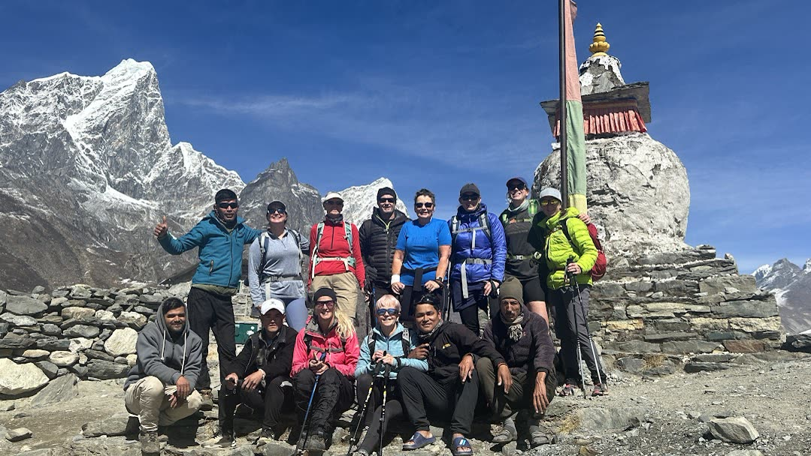
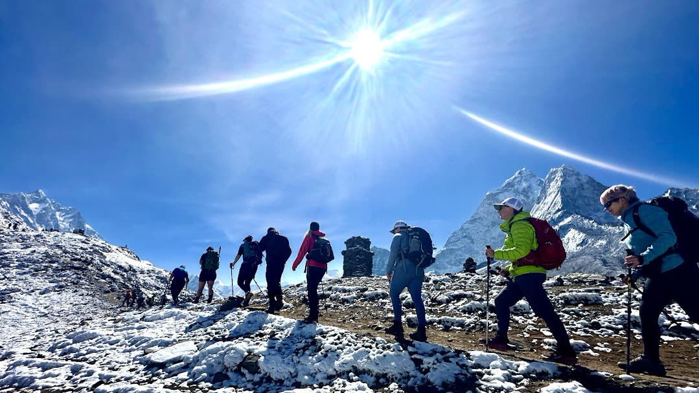
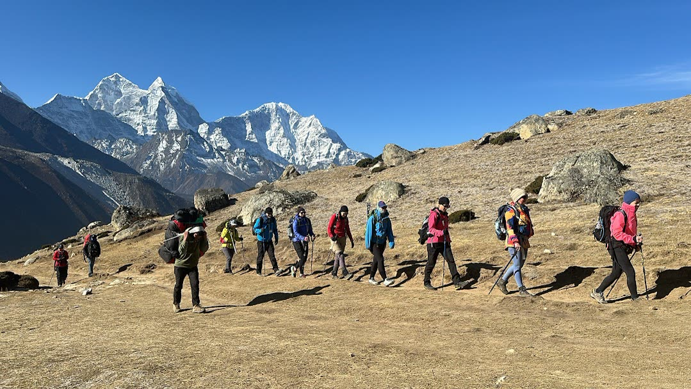
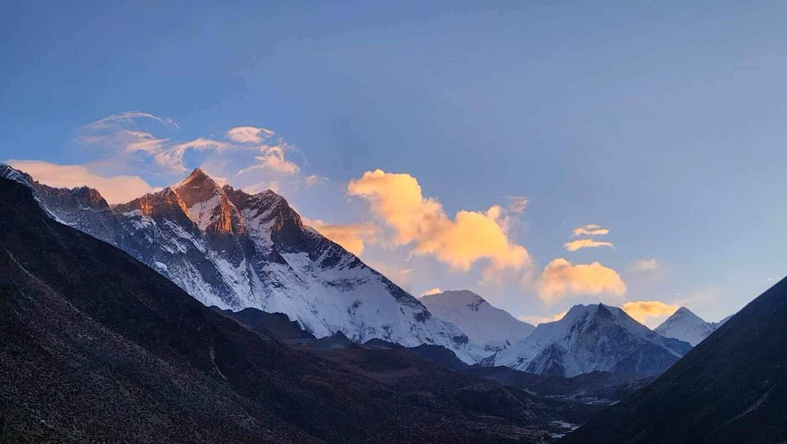
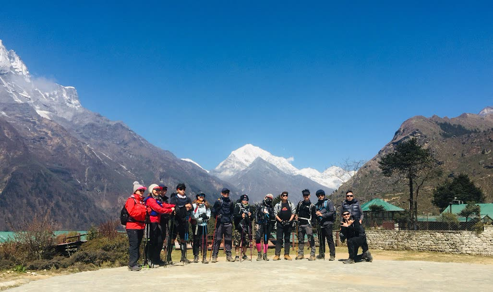
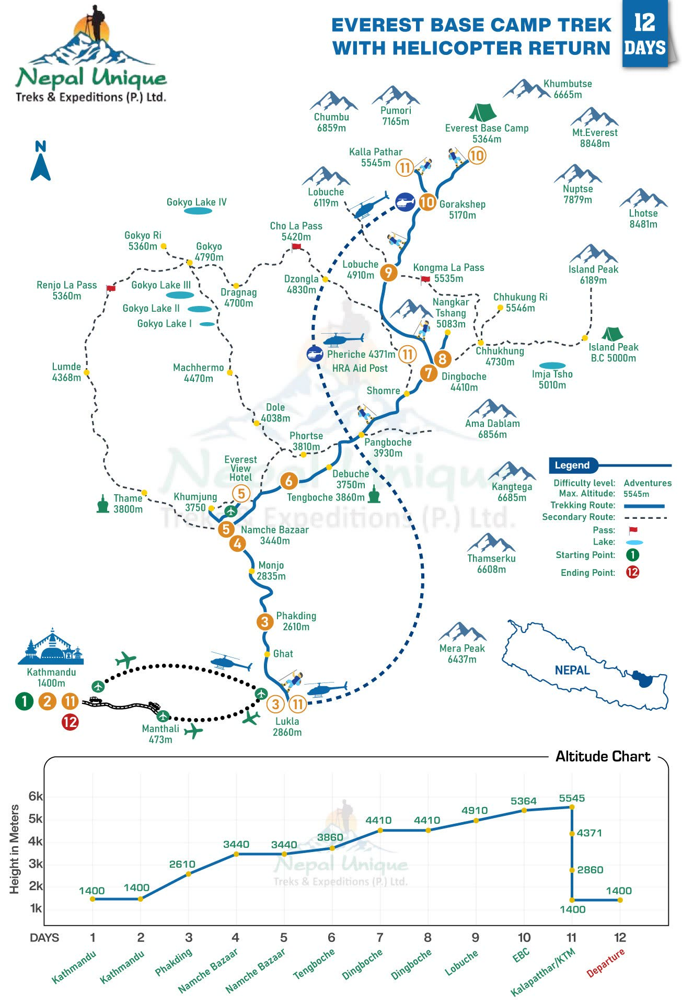

Everest Base Camp Trek with Heli Return
The Everest Base Camp Trek with Helicopter Return is a way to see the beautiful Himalayas of Nepal. It is an idea for people who want to trek and also want to fly back in a helicopter.





Key Trip Facts
Trek Overview
Trip Highlights
Overview
The Everest Base Camp Trek with Helicopter Return is a way to see the beautiful Himalayas of Nepal. It is an idea for people who want to trek and also want to fly back in a helicopter. This way, you can walk to the base of Mount Everest. Then fly back.
This trek is perfect for people who do not have a lot of time or for those who want a comfortable way to trek. The Everest Base Camp Trek with Helicopter Return has a balance of being challenging, beautiful, and convenient.
You start this journey by flying to Lukla. Lukla is an airport in the mountains that is the starting point for the Everest region. From Lukla, you follow the Everest Base Camp trekking route. You walk through villages and forests, crossing bridges with prayer flags. One of the places you visit is Namche Bazaar. Namche Bazaar is a town in the Khumbu region where you can get used to the high altitude and see the surrounding mountains.
The Everest Base Camp Trek with Helicopter Return also takes you to the Tengboche Monastery. The monastery is in a spot with big mountains behind it. You keep walking up to Everest Base Camp, which is 5,364 meters high. Many people want to visit Everest Base Camp. You can also walk up to Kala Patthar, which is 5,545 meters high. From Kala Patthar, you can see Mount Everest and other mountains, such as Lhotse and Ama Dablam.
What makes the Everest Base Camp Trek with Helicopter Return special is the way you fly back. If you're walking back down for many days, you can take a helicopter from Gorakshep or Kala Patthar. The helicopter flight is very exciting. You can see glaciers, valleys, and big mountains from the air. This way, you can save time and see the Himalayas from a different perspective.
The Everest Base Camp Trek with Helicopter Return is difficult. You need to be fit because you walk for hours every day, and the altitude is high. You do not need to climb mountains with ropes and special equipment. The best time to do this trek is in the spring from March to May, or in the autumn, from September to November. The weather is good during these times. You can see the mountains clearly.
In short, the Everest Base Camp Trek with Helicopter Return is an adventure in the Himalayas. You can see mountains and learn about the Sherpa culture. The helicopter flight, in the end, is very luxurious and exciting. This trek is a way to experience Nepal.
Why Choose the Everest Base Camp Trek with Helicopter Return?
The Everest Base Camp Trek with Helicopter Return is ideal for travelers who want to experience Everest in a smarter, faster, and more comfortable way.
1. Save Time Without Missing the Experience
Skip the long return trek and fly back by helicopter, reducing the journey while still completing the iconic Everest Base Camp trek.
2. Best of Trekking + Helicopter Tour
Enjoy both the classic trekking experience and a breathtaking Everest helicopter tour in one package.
3. Luxury & Comfort
Perfect for those who prefer a more comfortable adventure without compromising on the Himalayan experience.
4. Unmatched Aerial Views
Witness the Himalayas from above, including Mount Everest and surrounding peaks—an experience few trekkers get.
5. Less Physical Strain
Avoid several days of descent, making it easier on your body while still achieving Everest Base Camp.
6. Perfect for Limited Time Travelers
Ideal for travelers who want to complete the Everest Base Camp Trek with Helicopter Return in a shorter timeframe.
Best Time to do the Everest Base Camp Trek with Helicopter Return
Choosing the right season is crucial for the best experience on the Everest Base Camp Trek with Helicopter Return.
Spring (March – May) – Best Season
- Clear skies and stable weather
- Blooming rhododendron forests
- Excellent mountain views
- Ideal for helicopter flights
Autumn (September – November) – Peak Season
- Crystal-clear visibility
- Dry and stable weather
- Best trekking conditions
- Most popular time for the Everest Base Camp trek
Winter (December – February) – Quiet but Cold
- Fewer crowds and peaceful trails
- Stunning snow-covered landscapes
- Cold temperatures and possible flight delays
Monsoon (June – August) – Not Recommended
- Heavy rainfall and cloudy skies
- Poor visibility for trekking and helicopter flights
- Flight delays common
Food and Accommodation during the Everest Base Camp Trek with Helicopter Return
During the Everest Base Camp Trek with Helicopter Return, trekkers enjoy comfortable teahouse accommodation and a variety of nutritious meals along the trail in the Everest region.
Accommodation during the Trek
You will stay in traditional teahouses run by local families. Rooms are typically twin-sharing with basic but cozy facilities.
- Clean and comfortable rooms with beds, pillows, and blankets
- Shared bathrooms (attached bathrooms available in lower regions like Namche Bazaar)
- Dining halls with heating for socializing and meals
- Upgraded/luxury lodges available on request
In Kathmandu, you’ll stay in a comfortable hotel before and after the trek.
Food during the Trek
Teahouses offer a wide selection of meals to keep you energized at high altitude.
- Traditional Nepali meals (Dal Bhat – rice, lentils, vegetables)
- Tibetan bread, noodles, soups, and dumplings
- Continental options (pasta, pizza, eggs, pancakes)
- Hot drinks (tea, coffee, hot chocolate)
Note: Dal Bhat is the most popular choice among trekkers because it is fresh, filling, and provides long-lasting energy.
Local Guide and Porter for Everest Base Camp Trek with Helicopter Return
Hiring experienced staff is essential for a safe and enjoyable Everest Base Camp Trek with Helicopter Return.
Trekking Guide
Our professional, licensed guides are experts in the Everest region.
- Deep knowledge of trails, culture, and mountains
- Trained in first aid and altitude safety
- Fluent in English and friendly communication
- Handle logistics, permits, and emergencies
Porter Support
Porters make your journey more comfortable by carrying heavy loads.
- Carry 20–25 kg (shared between two trekkers)
- Allow you to trek with a light daypack
- Essential for reducing fatigue and enjoying the trek
Supporting local guides and porters also helps the mountain communities.
How to Avoid Altitude Sickness on the Everest Base Camp Trek with Helicopter Return
Altitude sickness is a common concern during the Everest Base Camp Trek with Helicopter Return, especially above 3,000 meters. Proper precautions ensure a safe and enjoyable journey.
What is Altitude Sickness?
It occurs when your body struggles to adapt to lower oxygen levels at high altitude.
Tips to Prevent Altitude Sickness
1. Ascend Gradually
Follow a proper itinerary with acclimatization days in places like Namche Bazaar.
2. Stay Hydrated
Drink 3–4 liters of water daily to help your body adjust.
3. Eat Well
Consume high-energy foods like Dal Bhat and soups.
4. Walk Slowly
Maintain a steady pace—“slow and steady” is key in the Himalayas.
5. Get Enough Rest
Avoid overexertion and listen to your body.
6. Consider Medication
Medications like Diamox can help (consult your doctor).
7. Avoid Alcohol & Smoking
These can worsen symptoms and dehydration.
Common Symptoms
- Headache
- Nausea
- Dizziness
- Loss of appetite
- Difficulty sleeping
If symptoms worsen, descend immediately and inform your guide.
Safety First
Our guides are trained to monitor your condition daily. In case of emergency, helicopter evacuation is available.
Trekking Gear List for Everest Base Camp Trek with Helicopter Return
Packing the right equipment is essential for a safe and comfortable Everest Base Camp Trek with Helicopter Return. Weather in the Everest region can change quickly, so proper layering and gear are key.
Clothing
- Moisture-wicking base layers (tops & bottoms)
- Insulating mid-layer (fleece or down jacket)
- Waterproof and windproof jacket & pants
- Lightweight trekking pants & shirts
- Thermal underwear
- Warm hat, sun hat, and buff/scarf
- Gloves (inner + insulated outer)
Footwear
- Sturdy, broken-in trekking boots
- Lightweight camp shoes or sandals
- Warm trekking socks (wool or synthetic)
Trekking Equipment
- Backpack (30–40L for daily use)
- Duffel bag (carried by porter)
- Sleeping bag (rated to -10°C or lower)
- Trekking poles
- Headlamp with extra batteries
- Water bottles or hydration system
Personal Essentials
- Sunscreen (SPF 30+) and lip balm
- Sunglasses (UV protection)
- Quick-dry towel
- Toiletries and wet wipes
- Hand sanitizer
Health & Safety
- Personal first aid kit
- Blister treatment (Compeed/moleskin)
- Water purification tablets
- Basic medications (pain relief, cold medicine)
- Optional: Diamox for altitude
Tip: You can rent or buy most trekking gear in Kathmandu before starting your trek.
Tipping for Guide and Porter on Everest Base Camp Trek with Helicopter Return
Tipping is a common and appreciated practice during the Everest Base Camp Trek with Helicopter Return. It reflects your satisfaction and supports the hardworking trekking staff.
Tipping Guide (Recommended)
- Trekking Guide: USD $20 per day (per group)
- Porter: USD $10 per day (per porter)
These amounts can vary depending on service quality, group size, and trek duration.
End of the Trek)
When & How to Tip
Tip at the end of the trek at Lukla, buy farewell drinks and dinner
Hand it directly with a thank-you
- You can also give as a group contribution
Why Tipping Matters for Guide and Porter
Supports local livelihoods in the Everest region
- Motivates staff to provide excellent service
- Shows appreciation for their hard work in challenging conditions
Frequently Asked Questions – Everest Base Camp Trek with Helicopter Return
1. What is the Everest Base Camp Trek with Helicopter Return?
The Everest Base Camp Trek with Helicopter Return is a combined trekking and aerial adventure where you hike to Everest Base Camp and return by helicopter instead of trekking back, saving time and adding a luxury experience.
2. How difficult is the Everest Base Camp Trek with Helicopter Return?
The trek is considered moderate to challenging due to high altitude and daily walking (5–7 hours). However, no technical climbing is required, making it suitable for fit beginners.
3. How long does the Everest Base Camp Trek with Helicopter Return take?
Most itineraries range from 9 to 12 days, depending on acclimatization and trekking pace.
4. What is the best time for the Everest Base Camp Trek with Helicopter Return?
The best time is during spring (March–May) and autumn (September–November) for clear skies and stable weather in the Everest region.
5. How much does the Everest Base Camp Trek with Helicopter Return cost?
The cost typically ranges from USD 2,500 to 4,000 depending on services, group size, and level of comfort.
6. Is altitude sickness a risk on this trek?
Yes, altitude sickness can occur above 3,000 meters. Proper acclimatization in places like Namche Bazaar helps reduce the risk.
7. Where does the helicopter return start from?
The helicopter usually departs from Gorakshep or near Kala Patthar after completing the Everest Base Camp.
8. What kind of accommodation is available during the trek?
You will stay in teahouses along the route with basic but comfortable facilities, and a hotel in Kathmandu before and after the trek.
9. Do I need travel insurance for this trek?
Yes, travel insurance is mandatory and must cover high-altitude trekking and emergency helicopter evacuation.
10. Do I need prior trekking experience?
No prior experience is required, but a good fitness level and preparation are highly recommended for the Everest Base Camp Trek with Helicopter Return.
Everest Base Camp Trek with Heli Return Itinerary: Day by Day
12 Days program for Everest Base Camp Trek with Heli Return. Daily timings and sequences remain flexible according to weather, flight operations, and group pace.
Day 1: Welcome at Kathmandu International Airport, Transfer to the Hotel, 1345 m
Approx. 1,345 m / 4,413 ft
Nepal Unique Treks staff will warmly welcome and receive you at the Tribhuwan International Airport in Kathmandu and bring you to the hotel. If you arrive earlier time on the day we have time to discuss the Everest Base Camp Trek with Heli Return our trip.
Day 2: Everest Base Camp Trek gear preparation and Acclimatization in Kathmandu 1345m
Approx. 1,345 m / 4,413 ft
After breakfast in the Hotel, we will complete our trekking agreements and payments. Introduce a trekking Guide and a short brief about the Trekking destination by Nepal Unique Treks owner. The Trek Guide will check your equipment which is most important for this trek. If you don't have enough equipment then your guide will help you to buy in Thamel
Day 3: Drive from Kathmandu to Ramechhap/Manthali (5 hours) and Flight to Lukla (20-25 minutes) - 2860 meters then Trek to Phakding (4 - 5 hours) - 2610 meters
Approx. 2,610 m / 8,563 ft
The Everest Base Camp Trek with Heli Return adventure begins with an early morning drive from Kathmandu to Ramechhap (Manthali Airport), a scenic 5-hour journey through winding countryside roads. Once you reach Ramechhap and get off the bus, you’ll board a short yet breathtaking 20-minute flight to Lukla (2,860m), the gateway to Everest. Flying over the towering peaks and deep valleys, this aerial journey itself is one of the best things to experience during any Everest region trek. As you land in Lukla, you can immediately sense the crisp mountain air. Take your time to rest for a little while. After that, the guides will take you on your first trek of the EBC with the Heli Return package. It will be a short 4-5 hour trek to Phakding (2,610m) from Lukla. The trail descends gradually, following the Dudh Koshi River, passing through quaint Sherpa villages, prayer wheels, and fluttering prayer flags. Along the way, you also get a first glimpse of the different mountains, including Kusum Kanguru (6,369m). Once you reach Phakding, we recommend the trekkers stroll around the village and interact with the locals. Overnight stay and dinner will be arranged in Phakding by the Nepal Unique Treks and Expeditions team.
Day 4: Trek from Phakding to Namche Bazaar (6-7 hours) - 3,444 meters
Approx. 3,444 m / 11,299 ft
Today, the trek becomes both adventurous and challenging, as we ascend toward the bustling Sherpa town of Namche Bazaar (3,444m). Namche Bazaar, famous as the trading hub of Nepal, has so much to offer visitors once you reach here. From ATMs to internet cafes, beautifully built houses to local bakeries, this place has it all. Talking about the trail, goes through pine forests, crossing suspension bridges draped with prayer flags. In this section of the Everest Base Camp Trek with Helicopter Return journey, the trekkers also walk over the famous Hillary Suspension Bridge, the highest and most iconic bridge of the Everest trekking region. As you leave Phakding and start the trail, you will enter Sagarmatha National Park. However, before entering the park, the trekkers need to get their permits checked. After that, we will continue through rugged trails with glimpses of Everest (8,848m), Lhotse (8,516m), and Thamserku (6,608m). Remember that, this section of the EBC Trek with Helicopter Return trail might offer you chances to witness different animals and birds. Besides, the final stretch before Namche is a steep uphill climb, but the reward is well worth it. Once you finish this steep ascend, Namche Bazaar welcomes you with colorful teahouses, bakeries, and stunning panoramic views of the Himalayas.
Day 5: Acclimatization Day at Namche Bazaar (Quick Hike to Everest View Hotel)
Approx. 3,444 m / 11,299 ft
On the third day of this magnificent trekking journey, we will stay back at Namche Bazaar for some acclimatization or resting purposes. However, remember that this will not be a day to stay idle in your hotel or guesthouse. Instead, we recommend trekkers explore the town, stroll around, and visit some significant places in Namche Bazaar. Acclimatization is crucial at high altitudes as your body needs to adjust to the thinner air. Therefore, we also need to go for a short and quick hike to help the body adapt to the circumstances at such a high altitude. With that in mind, our team of guides will take you on a short yet rewarding hike to the Everest View Hotel (3,880m), one of the highest-altitude hotels in the world. This spot offers a breathtaking panoramic view of Everest, Ama Dablam, Lhotse, and Nuptse along with some delicious cuisines and beverages like coffee and tea. After enjoying a warm cup of tea with the world’s highest mountain as your backdrop, we will return to Namche for a relaxed afternoon. Moreover, the trekkers can also go to explore the Sherpa Museum or spend time strolling around the local markets. Once you do that, you can head back to the hotel and take proper rest before dinner and overnight stay.
Day 6: Ascend from Namche Bazaar to Tengboche (4 hours) - 3860 meters
Approx. 3,860 m / 12,664 ft
After having a delicious and fulfilling breakfast, we leave Namche Bazaar on the fourth day. From there, we begin our trek on a trail that offers unobstructed views of Everest. Moreover, the trekkers also get chances to walk through rhododendron forests and along winding ridges, crossing several suspension bridges and smaller settlements. The highlight of today’s trek is reaching Tengboche (3,860m), home to the famous Tengboche Monastery. This is the largest and most spiritual monastery in the entire Khumbu region. Due to that reason, you will feel a different religious, peaceful, and calm vibe in this village. If you look around from Tengboche, you will also find yourself surrounded by Ama Dablam, Everest, and Thamserku. Due to that reason, this peaceful setting is perfect for reflection. Moreover, if you're lucky enough, you might also get a chance to witness a monk-led prayer ceremony in the evening, adding to the magical atmosphere.
Day 7: Trek from Tengboche to Dingboche (4 to 5 hours) - 4,410 meters
Approx. 4,411 m / 14,472 ft
Our journey in this part of the Everest Base Camp Helicopter Return map begins after a fulfilling and refreshing breakfast in the hotel. As you walk a little you can sense that the landscape transforms gradually and significantly. Moreover, as you ascend into alpine terrain, leaving behind the dense forests, you will also be walking in a comparatively barren area. Furthermore, the trail also passes through Pangboche Village, the highest permanent Sherpa settlement in the region, with ancient monasteries and traditional homes. Due to the presence of monasteries and temples, Dingboche also is a peaceful and spiritual place for the EBC Heli Return Trekking package. As we continue walking, the Everest Base Camp trek with Helicopter Return continues along the Imja Valley, offering stunning views of Island Peak and Mount Lhotse before reaching Dingboche (4,410m). Talking about Dingboche is a picturesque village surrounded by stone walls designed to protect crops from the harsh Himalayan winds.
Day 8: Acclimatization Day at Dingboche with Day Hike to Nagarjuna View Point
Approx. 4,410 m / 14,469 ft
Another acclimatization day as we reach to an altitude of 4410 meters above the sea level. On this day, the guides will take you on a hike to Nagarjuna Viewpoint (5,100m). The route to Nagarjuna Viewpoint is steep but rewarding. One of the best things about ascending to the Nagarjuna Viewpoint is the chance to witness the panoramic views of Makalu, Lhotse, Ama Dablam, and Island Peak. We will spend some time in the Nagarjuna viewpoint where the trekkers are free to capture photos and videos After that, the guides will lead you on a descending journey to Dingboche. Here the trekkers can go for a relaxed afternoon, soaking in the serene mountain atmosphere. Furthermore, we recommend the trekkers stroll around the Dingboche village and interact with the locals for the rest of the day.
Day 9: Ascend to Lobuche from Dingboche (6 hours) - 4940 meters
Approx. 4,940 m / 16,207 ft
Today’s journey in the Everest Base Camp Trek with Helicopter return takes you deeper into the high-altitude wilderness of the Khumbu region. This brings the trekkers one step closer to the legendary Everest Base Camp. Furthermore, the trek from Dingboche (4,410m) to Lobuche (4,940m) also stands as a significant transition into the glacial terrain, with stark landscapes, towering peaks, and an increasingly thin atmosphere. As you leave Dingboche, the trail gradually ascends past alpine meadows and scattered yak pastures, offering breathtaking views of Taboche (6,495m) and Cholatse (6,440m). The air becomes noticeably thinner, making each step more challenging. You’ll pass through Thukla (Dughla, 4,620m), a small settlement where many trekkers take a break before the most emotional section of the day, the Thukla Pass (4,830m). In this place, you will also witness memorials that honor climbers who lost their lives due to unsuccessful attempts to climb Mount Everest peak. After a final push over rocky terrain, you’ll reach Lobuche (4,940m), a small settlement where trekkers rest before the much-anticipated journey to Everest Base Camp the next day.
Day 10: Trek to Everest Base Camp (2 hours) - 5364 meters and Descend to Gorakshep (8 hours) - 5180 meters
Approx. 5,180 m / 16,995 ft
On the eighth day of the Everest Base Camp Helicopter Return trail, we go for the most awaited part of this entire trek, the journey to Everest Base Camp (5,364m)! The trail from Lobuche to Gorakshep (5,180m) offers a gradual ascent along the Khumbu Glacier's moraine, with breathtaking views of Nuptse, Pumori, and Lingtren. As we walk past the rugged, rocky paths, the trekkers can notice the air becoming thinner, making each step feel more demanding. At Gorakshep, we will go for a quick break before pushing forward towards Everest Base Camp. This section of the trek is pretty much technical and we also need to navigate through glacial moraines and loose rocks. Furthermore, we also get chances to witness the sight of the prayer-flag-draped base camp, set against the towering face of Everest. Remember that, this is one of the most unforgettable moments of the entire EBC with Helicopter Return Trek. As we reach the base camp, the trekkers will find themselves standing at the foot of the world’s tallest peak. Moreover, this also stands as the perfect chance to take in the surreal atmosphere where climbers prepare for their summit attempt. After celebrating this milestone, capturing photos, and soaking in the breathtaking surroundings, we will walk back to Gorakshep. Here, the trekkers can go for a well-earned rest, reminiscing about their achievement of ascending to the base camp of the highest peak in the world
Day 11: Return to Kathmandu by Helicopter via Pheriche, Lukla Airport 2850m
Approx. 1,345 m / 4,413 ft
Today marks the final morning and will certainly be one of the most adventurous and adrenaline-rushing. We recommend the trekkers wake up early in the morning as we go for an early sunrise hike to the Kalapatthar viewpoint (5,550 meters). Take your time to experience the pre-dawn crisp and thin air, which also makes the climb challenging. However, as you reach the viewpoint, that will be the most rewarding section of the entire trekking journey. From the top of the viewpoint, trekkers can witness the first rays of sunlight illuminating Everest, Lhotse, and Nuptse. This illumination causes the peaks to glow in brilliant golden hues, creating a breathtaking, once-in-a-lifetime sight. Moreover, from this panoramic viewpoint, you will also witness a 360-degree view of the world’s tallest mountains. After spending some precious time watching the mesmerizing sunrise and capturing photos of the mighty Everest massif, the guides will take you back to Gorakshep. Here, the trekkers can enjoy a delicious and fulfilling breakfast. Once you are done with breakfast, the guides from Nepal Unique Treks will take you to the helipad. From there, you will board a luxury helicopter for an exhilarating flight back to Kathmandu via Lukla Airport. This scenic aerial journey offers a bird’s-eye view of Everest Base Camp, the treacherous Khumbu Icefall, and the winding glacial rivers below. Watching these views offers a unique perspective of the incredible landscapes you trekked through. As you land in the Tenzing-Hillary Airport (Lukla), you will have time to reflect on your remarkable adventure, relax, and enjoy your final moments in the Everest Base Camp Trek with Helicopter Return to Kathmandu. NOTE: From Gorakshep Captain will do a shuttle flight to Pheriche. The first shuttle will carry 2 people with bags, and 2 nd shuttle will carry 3 people to Pheriche. After that helicopter will carry 5 passengers with luggage via Lukla to Kathmandu. The helicopter will give priority for altitude sickness rescue, then it will bring them down to Lukla and Kathmandu. Sometimes, due to bad weather and rescue cases, we have to wait. At that time, we should be patient
Day 12: Departure to TIA, 1345 m
Approx. 1,345 m / 4,413 ft
After the beautiful sunshine morning will sadly wake up you, your trip in Nepal comes to an end today; our spokesperson will escort you to the airport approx 3 hours before your flight schedule. On your way home, you have plenty of time to plan for your next adventure tour in the amazing Himalayan country. There will be a heart-touching relationship between you and our company during this trip. Nepal Unique Treks Family will be missing you and praying for your safe departure home.
What is Included (Regular Package)
What is Excluded
Booking Dates & Availability
Packing List for Everest Base Camp Trek with Heli Return
Essential Info: Down jackets and sleeping bags can be rented/arranged per package inclusions.High-Altitude Trail Gear (6 items)
Cold-Weather Layering System (5 items)
Sleep, Health & Permits (3 items)
Read before you book: Everest Base Camp Trek with Heli Return
Practical logistics derived directly from this package's route facts, inclusions, and elevation profile.
Accommodation & Meals (Hotel, Lodge & Tea House)
Accommodation follows the package grade (Hotel, Lodge & Tea House) in Kathmandu and along the Everest route. Check your package Includes section for included meals and Kathmandu hotel nights.
Permits & Local Logistics
Transportation is arranged via Private jeep/Helicopter (Group Base 4 people). Applicable permits listed in the package inclusions are arranged by Nepal Unique Treks prior to departure.
Route Difficulty & Elevation (5550 m)
Everest Base Camp Trek with Heli Return is rated Adventure with a maximum elevation of 5550 m. Follow your guide's pacing and stay hydrated throughout the 12 Days itinerary.
Best Time to Visit (Spring (March – May) Autumn (Sep – Nov))
Recommended operating season on the source page: Spring (March – May) Autumn (Sep – Nov). Additional official notes from the source page follow below.
Traveller Useful Information
Trekking to the Everest Base Camp is certainly not an easy task to be done. As this is the base camp of the tallest peak in the world, Mount Everest highly affects the weather and temperature of the entire trekking region. Due to that reason, the trek to Everest Base Camp is difficult and technical. However, the Everest Base Camp Trek with Helicopter Return is comparatively easy.
Ascending on this trail requires us to pass through several forests, waterfalls, rivers, streams, and villages. Furthermore, we will ascend to a very high altitude and the highest altitude is 5550 meters above sea level. As we keep ascending to the higher altitude, the risk of altitude sickness also increases. This makes the ascending trek on the EBC with Helicopter return comparatively difficult. However, as you complete the ascending journey, and explore both EBC and Kalapatthar viewpoints, you will return to Lukla in a helicopter.
The helicopter ride can cancel 3 to 4 days of descending journey. Moreover, the trekkers also get a chance to go for one of the most luxurious ways to return from such a high altitude. Therefore, the Everest Base Camp Trek with Helicopter Return's difficulty level is moderate if you compare it with any other trek in the Everest region.
If you are wondering about the transportation in the overall journey, then we have got you covered. From the moment to land at the Tribhuvan International Airport (TIA) till the departure after the completion of the trek, we provide a comfortable private commute. Additionally in the journey, if you wish to take a flight from the Manthali Airport, Ramechhap, we escort you the luxury bus or jeep which gives you the best comfort in the entire drive.
Another important thing that we need to understand is the flight to Lukla Airport in the Himalayas can be canceled due to the weather conditions. In such a case, we will take care of booking the next possible flight to Lukla. Meanwhile, in the interim period, you can explore Kathmandu.
But if you wish to reach Lukla on the same day, then we provide an option to reach Lukla via Helicopter ride. For 5 people this has cost nearly $3,000 from Kathmandu to Lukla.
Furthermore, in our itinerary, we have a return trip to the Lukla from Gorakshep, which normally takes about 20 to 25 minutes. We will take care of the helicopter flight as well. Meanwhile, you can enjoy the scenic views on the route.
If you want to go on any trekking journey in Nepal, you must be aware of which season you choose to do so. Moreover, as Mount Everest highly influences the climate and weather of the entire Khumbu region, the weather changes can be unpredictable at times. Therefore, before you go for the trek, we recommend you be aware of the best season to go for the Everest Base Camp Trek Helicopter Return.
Going for the EBC Trek with Heli Return would be best if you choose the Autumn season (September to November) and Spring season (March to May). During these two seasons, the overall climate, conditions, and circumstances stand perfect for this trekking package. The trekkers can witness amazing forests, rhododendron blossoms, springs, lakes, waterfalls, etc if they choose one of these two seasons for the ascend.
Another benefit of choosing the Spring or Autumn season for the Everest Base Camp Heli return Trekking package is that almost all of the hotels, guesthouses, and tea houses remain open. Therefore, the trekkers can get access to a larger variety of food and accommodation services as well. Due to all of these circumstances and benefits spring and autumn are the two best seasons for the Everest Base Camp Trek Helicopter Return journey.
Trekking to Everest Base Camp is a once-in-a-lifetime adventure, and we believe it should be just as comfortable as it is exciting. That’s why the Nepal Unique Treks and Expedition team arranges the best lodges and guesthouses along the route. Our arrangements also ensure you have a warm and cozy place to rest after a day on the trails. Whether you prefer a certain type of room or have specific dietary needs, just let us know.
Our team will be more than happy to personalize your experience. Meals along the trek are just as important as the journey itself, and you’ll have a variety of Nepali, Tibetan, Indian, and Western dishes to choose from. Nothing beats enjoying a delicious, hearty meal while surrounded by the breathtaking Himalayan landscape.
Accommodation varies from place to place, but even standard rooms come with thoughtful touches to make your stay as comfortable as possible. You can expect hot showers, charging stations, and Wi-Fi, so you can relax and recharge with ease. Many lodges also feature beautiful traditional architecture, adding an authentic charm to your experience.
No matter where you stay, we make sure you’re well taken care of. Remember that booking the Everest Base Camp with Heli Return Trek with Nepal Unique Treks means assuring one of the best food and accommodations among all the other services throughout the journey.
Altitude Sickness is quite common when we ascend above 2,400 meters. It happens when our body struggles to acclimatize to lower oxygen levels at high elevations. Some of the common symptoms are headache, fatigue, nausea, shortness of breath, and dizziness.
Altitude sickness also known as Acute Mountain Sickness(AMS), escalates into more serious conditions, like High Altitude Pulmonary Edema (HAPE) or High Altitude Cerebral Edema (HACE), both of which require immediate medical attention. However, with the right precautions, you can minimize the risks.
So, a proper acclimatization schedule is necessary for the journey. For this, we have arranged a few days to adapt to the higher altitude and oxygen levels in the itinerary. Additionally, staying hydrated by drinking 3-4 liters of water daily, eating a carbohydrate-rich diet, and using an oximeter to monitor oxygen levels are key steps in preventing AMS. If symptoms do arise, it’s important to listen to your body and descend to a lower altitude as soon as possible.
Most importantly, altitude sickness affects differently in everyone. So, it is crucial to understand oneself and if there is any sign of discomfort then notify the guides and look for some assistance immediately. With these precautions in place, you’ll be ready to conquer the journey safely, all while experiencing the beauty and majesty of the world’s highest peak.
It is necessary to pack all the things we require on the trek beforehand. As we ascend in our journey, the chances of getting different items are lesser. Therefore, we must pack everything we require for this journey before we start this trek. We have created a list of items that you are required to pack:
Waterproof Trekking Shoes
Thick Warm Woolen Socks
Trekking Trousers
Thermal T-shirt (Long Sleeves)
Down Jacket
Waterproof Jacket
Warm Waterproof Gloves
Headlight for Night or Sunrise Hike
High-Quality Trekking Poles
Day Backpack
Waterproof Bag
Thermal Water Bottle
First Aid Kit
Power Bank
Snacks (Energy Bars and Power Gel)
Trekking Trail Map
Mobile Phone and Power Bank for Mobile Charging
Padlock and Key for Safe Backpack
Sun protection cream, wet wipes, and hand sanitizer
Sleeping bags
Sunglasses, sun hat, or woolen cap
Till now you must have known that we make things simpler for you so that you can enjoy more in the journey. Therefore, the booking process is also quite simple. You can directly message us on WhatsApp, Zalo, or Viber at +9779851023285. Also, you can email us at info@nepaluniquetreks.com or nepaluniquetreks@gmail.com.
Furthermore, we also customize the itinerary according to your requirements and make sure your trip goes according to your plan. Most importantly, we care about the service that we provide and if you have any special requirements then we are always open to talk about and make it happen.
After you choose how you want to proceed with the itinerary, for the booking we require a 30% deposit to secure your spot. In addition, you can communicate with our team directly regarding payment methods.
Once your booking is confirmed, we will provide you with additional information to help you prepare for your trip. If you have any questions about the booking process, feel free to contact us anytime.
Altitude Profile of Everest Base Camp Trek with Heli Return
Weather on Everest Base Camp Trek with Heli Return
Everest Base Camp Trek with Heli Return Route Map

Book This Trek
Contact our Kathmandu coordinators using the booking panel for private or fixed-group departures.
Trip Feedback
Explore verified traveller stories or leave feedback on Nepal Unique Treks.
Visit Nepal Unique Treks